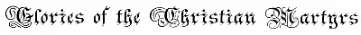
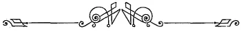
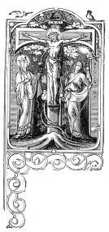
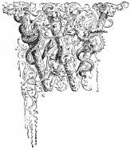
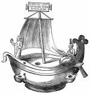

Fabiola, or the Church of the CatacombsFirst pages
F A B I O L A;
OR,
THE CHURCH OF THE CATACOMBS,
By His Eminence Cardinal Wiseman.
HÆC, SUB ALTARI SITA SEMPITERNO, LAPSIBUS NOSTRIS VENIAM PRECATUR TURBA, QUAM SERVAT PROCERUM CREATRIX PURPUREORUM. Prudentius.
HERE, BENEATH THE ETERNAL ALTAR, LIES THAT THRONG OF ILLUSTRIOUS MARTYRS, WHO ASK PARDON FOR OUR SINS, AND OVER WHOM THE CITY THAT GAVE THEM BIRTH WATCHES.
A Historical Picture
OF THE
SUFFERINGS OF THE EARLY CHURCH
IN PAGAN ROME,
ILLUSTRATING THE

as exemplified in the lives of The fair young Virgin, St. Agnes; the heroic Soldier, St. Sebastian;
the devoted Youth, St. Pancratius; etc., etc.
ILLUSTRATED EDITION.
WITH A PREFACE BY
Rev. Richard Brennan, LL.D.,
Pastor of St. Rose of Lima’s Church, New York.
NEW YORK, CINCINNATI, AND ST. LOUIS:
B E N Z I G E R B R O T H E R S,
PRINTERS TO THE HOLY APOSTOLIC SEE.
1886.

Copyright, 1885, by Benziger Brothers.
Electrotyped by SMITH & McDOUGAL, New York.
PREFACE
TO THE ILLUSTRATED EDITION.

HE late Cardinal Wiseman’s admirable story, “Fabiola,” has been read for the last thirty years in many lands and many tongues. At this late day, to say that it has been everywhere productive of inestimable good to Christian souls, would be the utterance of the merest truism. But while its salutary influence has been felt far and wide, it seems to have been fraught with special blessings most peculiarly adapted to the religious circumstances of our own land; where, thirty years ago, when the work made its first appearance among us, the condition of the Church was not altogether dissimilar from that of the early Church in pagan Rome at the date of the story.Although the sun of divine faith had long before begun to warm with its vivifying and sanctifying rays the virgin soil of this western land of ours, yet it had hardly risen above the horizon when dark and threatening clouds of persecution seemed about to obscure its light, promising, instead of a bright and cheerful day for the Church, a night of disappointment and suffering. The good already accomplished by the early missionaries seemed imperilled by the coming storm, and the work at that time in progress was meeting with fierce and even cruel opposition. Then it was that men asked themselves, was it necessary that the founding of Christ’s Church in America should undergo a process similar to that which it had undergone in pagan Rome. Although the Catholics of America thirty years ago had little cause to fear the torch or the axe of the executioner, though they could hardly hope for the blood-stained crown of martyrdom in the public arena, though they heard not the cry, “to the wild beasts with the Christians,” yet they dwelt amid much religious privation, underwent keen mental persecution, and were made the victims of rampant bigotry, furious political partisanship, and humiliating social ostracism. Like the heroic characters so graphically portrayed by the Cardinal’s graceful pen in the history of Fabiola, the Catholics in America professed a faith imperfectly known in the land, or known only to be despised and hated by the great majority of the American people, just as that self-same faith had been misrepresented, detested and persecuted in the early ages, by the misguided citizens of pagan Rome.
In such times, Catholics sorely needed the help of bright examples of courage, zeal and perseverance, to beckon them on in the steady pursuit of their arduous and sometimes perilous task of preserving, practising, and declaring their faith. Such examples they found in Cardinal Wiseman’s beautiful work, models of fidelity to faith, heroes and heroines who in their patient lives and cruel deaths gave testimony unto Christ Jesus, producing such fruits of virtue, and showing forth so beautifully and so powerfully the effects of the true faith, that that faith itself finally triumphed over all opposition; and verifying the words of the Apostle, became a victory that conquered the world: “Haec est victoria, quæ vincit mundum, fides nostra.” “This is the victory which overcometh the world, our faith.”
By the study of these models, as presented in the story of Fabiola, the struggling Catholics of this country learned how to possess their souls in patience. While admiring the heroic fortitude of those martyrs, though not presuming always to imitate their extraordinary ways, our predecessors in the faith felt themselves encouraged to follow in their footsteps, bearing patiently all religious privations and adhering to their faith amid hatred and contempt, and giving bold testimony of it before unbelieving men.
Inspired by the example of these primitive Christians, the priests and people alike of the past generation were strengthened in the conviction that in their poor despised Church, at that time remarkable for its poverty and obscurity, there dwelt the eternal truth brought down to earth from heaven by the Son of the living God, the truth which He had confirmed by miracles and sealed with His precious life’s blood; the truth in whose defence millions of the holiest and greatest men sacrificed their very lives; the truth in whose possession the noblest and most enlightened among the children of Adam had found peace in life and consolation in death. For this truth, they were willing to die.
How opportune, at that time, was the appearance in our midst of a work from a master-hand, presenting to view in a most vivid and realistic light the trials and triumphs of those heroes in the Church who raised the cross of Christ, bedewed with martyr-blood, upon the dome of the Roman Capitol! Like the cheering flambeau borne in the hands of the acolyte of the Catacombs, the story of Fabiola served to brighten and cheer the arduous path of many a despised if not persecuted Catholic, amid the religious wilderness then to a great extent prevailing over our broad land.
But as the primitive Church emerged from her hiding-places, so, thank God, has that same Church in our own country bounded forth from obscurity and contempt into the broad light of day, where she stands confessed in all her truth and beauty, at once the envy and admiration of her recent opponents.
While to-day, protestantism is an enemy that no Catholic need fear, a new and more formidable foe confronts us in the shape of materialism. The contest between truth and error is as fierce as ever, though the tactics are changed. We should arm ourselves for the battle against materialism as our fathers did against protestantism. We can win no laurels in a war against protestantism, for it has been subdued by those ahead of us in the ranks. Such laurels have been gathered by earlier and worthier hands than ours. Nor are there places for us by the side of the martyrs Pancratius, Sebastian, and other heroes of primitive Christianity. Yet a great trust has descended to our hands, and sacred obligations have devolved on the present generation of Catholics. There remains to us a great duty of defence and preservation, and there lies open before us a grand and glorious pursuit to which the religious needs of the times loudly call us. We live in an age of sordid materialism, when it is of vital importance to turn the thoughts of all Christians to the really heroic ages of the Church, and to the lives of men and women who have done honor to principle, glorified God and benefited their fellow-beings by their holy and self-sacrificing lives.
As the story of Fabiola taught our immediate predecessors in the faith to admire and imitate the virtues of the primitive Christians, so should we learn to cherish the names and memories of the devoted ones who, amid hardships, privations and contempt, laid the solid foundations in this land, of that stately and magnificent structure beneath whose hallowed roof it is our happy lot to dwell unmolested in peace and prosperity.
Therefore we gladly welcome this first illustrated edition of Cardinal Wiseman’s “Fabiola.” Viewed in its improved mechanical aspect, it is emblematic of the wondrous development of our Catholic literature, and when contrasted with the simpler and humbler editions which we received thirty years ago, seems like the stately cathedral that has taken the place of the lowly wooden chapel of that period. Its many beautiful engravings will bring more vividly before the reader the scenes of cruel persecution already graphically described, and with its bright examples of constancy and self-sacrifice serve to stimulate and fortify Catholics of the present and future generations in their contest with worldliness, materialism, and, we may say, unmitigated paganism.
R. B.
St. Rose’s Rectory, All Saints’ Day, 1885.
PREFACE.

HEN the plan of the Popular Catholic Library was formed, the author of the following little work was consulted upon it. He not only approved of the design, but ventured to suggest, among others, a series of tales illustrative of the condition of the Church in different periods of her past existence. One, for instance, might be called “The Church of the Catacombs;” a second, “The Church of the Basilicas;” each comprising three hundred years: a third would be on “The Church of the Cloister;” and then, perhaps, a fourth might be added, called “The Church of the Schools.”In proposing this sketch, he added,—perhaps the reader will find indiscreetly,—that he felt half inclined to undertake the first, by way of illustrating the proposed plan. He was taken at his word, and urged strongly to begin the work. After some reflection, he consented; but with an understanding, that it was not to be an occupation, but only the recreation of leisure hours. With this condition, the work was commenced early in this year; and it has been carried on entirely on that principle.
It has, therefore, been written at all sorts of times and in all sorts of places; early and late, when no duty urged, in scraps and fragments of time, when the body was too fatigued or the mind too worn for heavier occupation; in the road-side inn, in the halt of travel, in strange houses, in every variety of situation and circumstances—sometimes trying ones. It has thus been composed bit by bit, in portions varying from ten lines to half-a-dozen pages at most, and generally with few books or resources at hand. But once begun, it has proved what it was taken for,—a recreation, and often a solace and a sedative; from the memories it has revived, the associations it has renewed, the scattered and broken remnants of old studies and early readings which it has combined, and by the familiarity which it has cherished with better times and better things than surround us in our age.
Why need the reader be told all this? For two reasons:
First, this method of composition may possibly be reflected on the work; and he may find it patchy and ill-assorted, or not well connected in its parts. If so, this account will explain the cause.
Secondly, he will thus be led not to expect a treatise or a learned work even upon ecclesiastical antiquities. Nothing would have been easier than to cast an air of erudition over this little book, and fill half of each page with notes and references. But this was never the writer’s idea. His desire was rather to make his reader familiar with the usages, habits, condition, ideas, feeling, and spirit of the early ages of Christianity. This required a certain acquaintance with places and objects connected with the period, and some familiarity, more habitual than learned, with the records of the time. For instance, such writings as the Acts of primitive Martyrs should have been frequently read, so as to leave impressions on the author’s mind, rather than have been examined scientifically and critically for mere antiquarian purposes. And so, such places or monuments as have to be explained should seem to stand before the eye of the describer, from frequently and almost casually seeing them, rather than have to be drawn from books.
Another source of instruction has been freely used. Any one acquainted with the Roman Breviary must have observed, that in the offices of certain saints a peculiar style prevails, which presents the holy persons commemorated in a distinct and characteristic form. This is not the result so much of any continuous narrative, as of expressions put into their mouths, or brief descriptions of events in their lives, repeated often again and again, in antiphons, responsoria to lessons, and even versicles; till they put before us an individuality, a portrait clear and definite of singular excellence. To this class belong the offices of SS. Agnes, Agatha, Cæcilia, and Lucia; and those of St. Clement and St. Martin. Each of these saints stands out before our minds with distinct features; almost as if we had seen and known them.
If, for instance, we take the first that we have named, we clearly draw out the following circumstances. She is evidently pursued by some heathen admirer, whose suit for her hand she repeatedly rejects. Sometimes she tells him that he is forestalled by another, to whom she is betrothed; sometimes she describes this object of her choice under various images, representing him even as the object of homage to sun and moon. On another occasion she describes the rich gifts, or the beautiful garlands with which he has adorned her, and the chaste caresses by which he has endeared himself to her. Then at last, as if more importunately pressed, she rejects the love of perishable man, “the food of death,” and triumphantly proclaims herself the spouse of Christ. Threats are used; but she declares herself under the protection of an angel who will shield her.
This history is as plainly written by the fragments of her office, as a word is by scattered letters brought, and joined together. But throughout, one discerns another peculiarity, and a truly beautiful one in her character. It is clearly represented to us, that the saint had ever before her the unseen Object of her love, saw Him, heard Him, felt Him, and entertained, and had returned, a real affection, such as hearts on earth have for one another. She seems to walk in perpetual vision, almost in ecstatic fruition, of her Spouse’s presence. He has actually put a ring upon her finger, has transferred the blood from His own cheek to hers, has crowned her with budding roses. Her eye is really upon Him, with unerring gaze, and returned looks of gracious love.
What writer that introduced the person would venture to alter the character? Who would presume to attempt one at variance with it? Or who would hope to draw a portrait more life-like and more exquisite than the Church has done? For, putting aside all inquiry as to the genuineness of the acts by which these passages are suggested; and still more waving the question whether the hard critical spirit of a former age too lightly rejected such ecclesiastical documents, as Guéranger thinks; it is clear that the Church, in her office, intends to place before us a certain type of high virtue embodied in the character of that saint. The writer of the following pages considered himself therefore bound to adhere to this view.
Whether these objects have been attained, it is for the reader to judge. At any rate, even looking at the amount of information to be expected from a work in this form, and one intended for general reading, a comparison between the subjects introduced, either formally or casually, and those given in any elementary work, such as Fleury’s Manners of the Christians, which embraces several centuries more, will show that as much positive knowledge on the practices and belief of that early period is here imparted, as it is usual to communicate in a more didactic form.
At the same time, the reader must remember that this book is not historical. It takes in but a period of a few months, extended in some concluding chapters. It consists rather of a series of pictures than of a narrative of events. Occurrences, therefore, of different epochs and different countries have been condensed into a small space. Chronology has been sacrificed to this purpose. The date of Dioclesian’s edict has been anticipated by two months; the martyrdom of St. Agnes by a year; the period of St. Sebastian, though uncertain, has been brought down later. All that relates to Christian topography has been kept as accurate as possible. A martyrdom has been transferred from Imola to Fondi.

The Bark of Peter, as found in the Catacombs.
It was necessary to introduce some view of the morals and opinions of the Pagan world, as a contrast to those of Christians. But their worst aspect has been carefully suppressed, as nothing could be admitted here which the most sensitive Catholic eye would shrink from contemplating. It is indeed earnestly desired that this little work, written solely for recreation, be read also as a relaxation from graver pursuits; but that, at the same time, the reader may rise from its perusal with a feeling that his time has not been lost, nor his mind occupied with frivolous ideas. Rather let it be hoped, that some admiration and love may be inspired by it of those primitive times, which an over-excited interest in later and more brilliant epochs of the Church is too apt to diminish or obscure.
That is the end of the first pages. To keep reading, download the whole book, free:
Which one? The PDF opens straight away in the browser, on any phone or computer. The EPUB is saved in Downloads and is read with a reading app (Google Play Books on Android, Books on iPhone, Kindle or Kobo), which lets you enlarge the text.